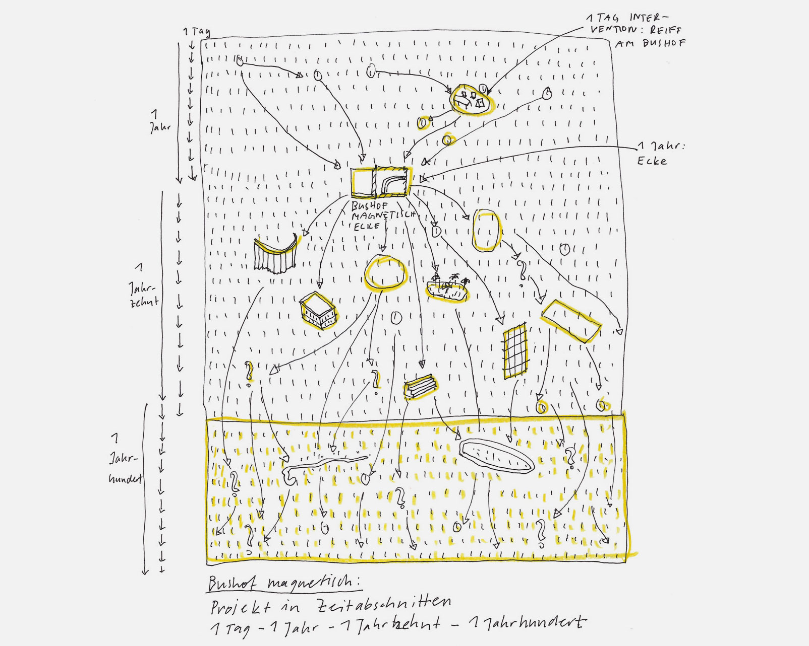

1/2 Interventionen mit Zeit
Der Erklärung des konkreten Entwurfs soll eine Überlegung vorangestellt werden: Das Suchen einer „sauberen Lösung“ wird oft einer viel komplexeren Realität nicht gerecht. Daher soll eine Planung in Zeitebenen vorgeschlagen werden. Was heißt das genau?Jede Projektierung und Umsetzung werden einer entsprechend ihrer zeitlichen Umsetzbarkeit kategorisiert. Es gibt folgende Zeitebenen: ein Tag, ein Jahr, ein Jahrzehnt und ein Jahrhundert. Jedem Zeitstück kommt eine unterschiedliche Rolle zu.
